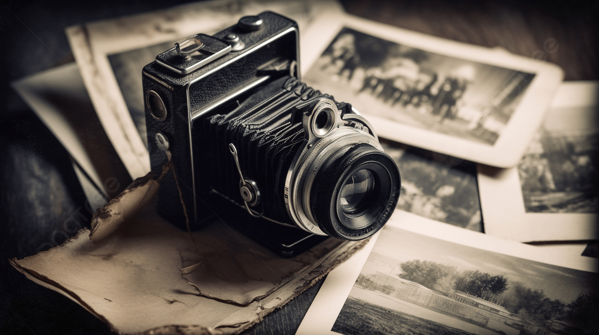
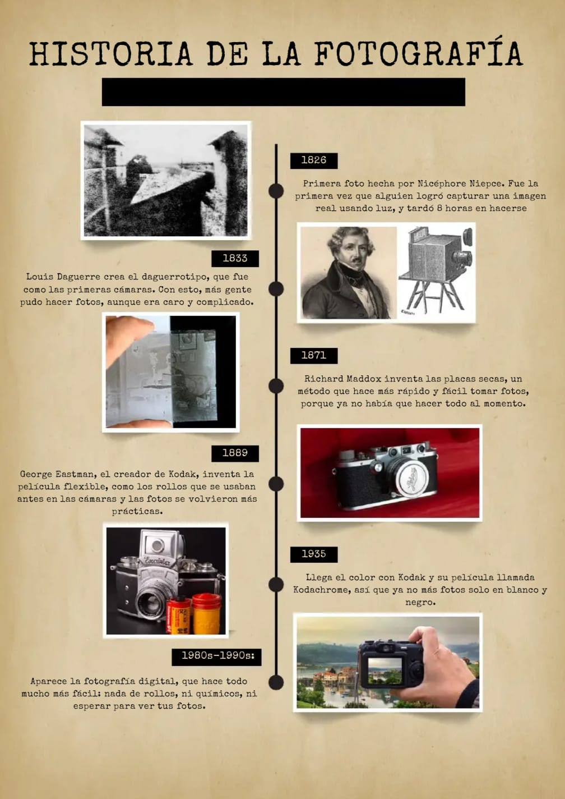

Arte en Cámara
Arte en Cámara
Arte en Cámara
Arte en Cámara

La historia de la fotografía comenzó mucho antes de la invención de las cámaras modernas.
Desde la antigüedad, los científicos estudiaron cómo la luz podía proyectar imágenes a través
de pequeños orificios, un fenómeno conocido como cámara oscura.
En 1826, el inventor francés Joseph Nicéphore Niépce logró obtener la primera fotografía permanente de la historia. Este acontecimiento marcó el nacimiento de la fotografía como una nueva forma de registrar la realidad.
Años más tarde, Louis Daguerre perfeccionó el proceso fotográfico y presentó el daguerrotipo, una técnica que permitía obtener imágenes más nítidas y detalladas. Gracias a este avance, la fotografía comenzó a popularizarse en diferentes partes del mundo.
Durante el siglo XIX y principios del siglo XX surgieron nuevas tecnologías que redujeron el tiempo de exposición y facilitaron el uso de las cámaras. Esto permitió que más personas pudieran capturar imágenes de su vida cotidiana.
Con la llegada de la fotografía en color durante el siglo XX, las imágenes adquirieron una nueva dimensión visual. Posteriormente, la fotografía digital revolucionó completamente el sector al eliminar la necesidad de revelar películas fotográficas.
Actualmente, la fotografía forma parte de la vida diaria de millones de personas. Los teléfonos inteligentes y las cámaras digitales permiten capturar, editar y compartir imágenes de manera instantánea, convirtiendo la fotografía en una de las formas de comunicación visual más importantes de nuestra época.
